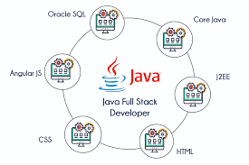

Full-stack Java development empowers you to build complete applications—from engaging frontends to powerful backends. Mastering it opens doors to endless career opportunities and innovation.
Work Across the Stack
As a full-stack Java developer, you’re not limited to one part of the application. You can design and build attractive, user-friendly interfaces while also writing the backend logic that powers them.
High Industry Demand
Businesses today prefer developers who can handle projects from start to finish without relying heavily on separate teams for frontend and backend. This skill not only makes you more valuable in the job market but also opens opportunities to work on diverse projects.

Strong Problem-Solving Skills
Working across both frontend and backend exposes you to a variety of challenges, from optimizing user experience to improving database performance.